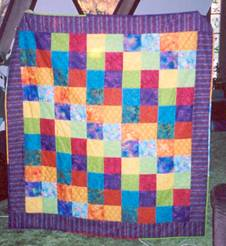

|
E |
Colorful Board 2 |
|
|
Input |
Standard Input |
|
|
Output |
Standard Output |
|
You
are given a rectangular board. You are asked to draw M horizontal
lines and N vertical lines in that board, so that the whole board
will be divided into (M+1) × (N+1) cells. So there
will be M + 1 rows each of which will exactly contain N
+ 1 cells or columns. The yth cell of xth
row can be called as cell(x, y). The distance between two
different cells is the summation of row difference and column difference of
those two cells. So the distance between cell(x1, y1)
and cell(x2, y2) is |x1 –
x2| + |y1 – y2|. For
example, the distance between cell(2, 3) and cell(3, 2) is |2 – 3| + |3 – 2| =
1 + 1 = 2.
After that you have to color every cells of the board. For
that you are given K
different colors. To make the board more beautiful you have to make sure that
no two adjacent cells contain the same color, in other word no two cells having
the same color can have the distance 1 in between them. To make the board even
more beautiful you have to make sure no two cells having the same color can
have the odd distance between them. So if you color cell(3, 5) with red, you cannot
color cell(5, 8) with red, as the distance between them is 5, which is odd.
Note that you can keep some color unused, but you can’t keep some cell
uncolored.
Input
will start with an integer T (T ≤ 50000) which indicates
the number of test cases. Each of the next T lines will contain
three space separated integers M (0 ≤ M ≤ 19),
N (0 ≤ N ≤ 19) and K (1 ≤ K ≤
50).
For each test case,
output a single line in the form “Case
#: P”,
where # will be replaced by the case number and P will be replaced
by the number of valid ways you can draw the given board. The result can be
very large you should output the result modulo 1000000007.
|
Sample Input |
Sample Output |
|
4 |
Case 1: 1 |